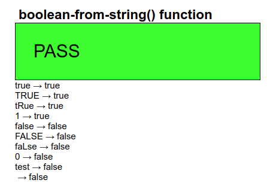
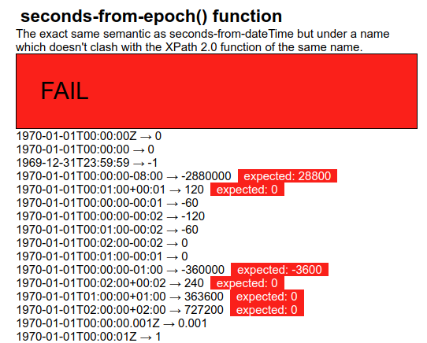

Despite the caveats above regarding tests that cannot be tested automatically, the vast majority can, and almost all use a standard template.
To demonstrate the workings of this template, let us consider an example
test case for a function, in this case for the function
boolean-from-string().
We want to test that a function calls such as
boolean-from-string('true') return the correct result.
To do this, the parameter value is enclosed in an element:
<test>true</test>
and we add attributes where the required result, the actual result, and whether the test case passes or not will be stored:
<test pass="" res="" req="true">true</test>
As many such test cases as necessary are then gathered together in an instance:
<instance>
<tests pass="" name="boolean-from-string() function" xmlns="">
<test pass="" res="" req="true">true</test>
<test pass="" res="" req="true">TRUE</test>
<test pass="" res="" req="true">tRue</test>
<test pass="" res="" req="true">1</test>
<test pass="" res="" req="false">false</test>
<test pass="" res="" req="false">FALSE</test>
<test pass="" res="" req="false">faLse</test>
<test pass="" res="" req="false">0</test>
<test pass="" res="" req="false">qwertyuiop</test>
<test pass="" res="" req="false"></test>
...
</tests>
</instance>A bind is then used to calculate the individual results:
<bind ref="test/@res" calculate="boolean-from-string(..)"/>
whose effect is to calculate the res attribute for all
test elements.
Another bind, independent of which function is being tested, calculates if the computer result matches the expected value:
<bind ref="test/@pass" calculate="if(../@res = ../@req, 'yes', 'no')"/>
and finally a bind for the attribute on the outmost element records if all tests have passed:
<bind ref="@pass" calculate="if(//test[@pass!='yes'], 'FAIL', 'PASS')"/>
which says that if there is a test element whose
pass attribute does not have the value yes, then the
test set fails, and otherwise it passes. We may in future also add a percentage
pass value, that counts the number of passed tests:
<bind ref="@percent" calculate="100*count(//test[@pass='yes']) div count(//test)"/>
With this structure, every test form has an identical set of controls, that output the name of the test, an optional description (which, following XForms rules, is only displayed if present in the instance), whether all tests have passed, for quick inspection, and the list of each test with an indication of what was expected when it has failed:
<group>
<label class="title" ref="@name"/>
<output class="block" ref="description"/>
<output class="{@pass}" ref="@pass"/>
<repeat ref="test">
<output value="."/> → <output ref="@res"/>
<output class="wrong" ref="@req[.!=../@res]"/>
</repeat>
</group>Note that with the statement
<output class="wrong" ref="@req[.!=../@res]"/>
this only selects the req attribute if its value does not match
that of the res attribute on the same element. If they match, the
req is not selected, and nothing is output.
This looks like this when run:

Here is an example of a fail (and in this case with a description as well):

If we want to test a function with more than one parameter, we structure the
test elements slightly differently, for instance for the
compare() function which has two parameters, by enclosing each
parameter in an element of its own:
<test pass="" res="" req="-1">compare(<a>apple</a>, <b>orange</b>)</test>
and then modify the bind that calculates the results:
<bind ref="test/@res" calculate="compare(../a, ../b)"/>
Note that in the general template structure, these are the only places where there are differences between test cases: in the data, and in the bind calculating the result. The rest remains identical.